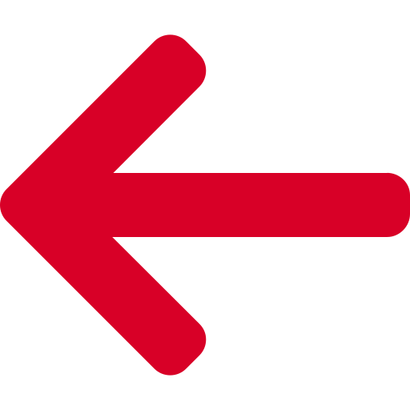

Расчет маршрута
Яндекс.Карты
Google.Maps
Добавить точку

Выберете тип карт
Теперь создавайте маршрут
Несколько ограничений:
Нельзя удалить последнюю оставшуюся точку маршрута
Нельзя перемещать пустую точку маршрута
Нельзя перемещать единственную заполненную точку маршрута
Удалить точку
Да
Отмена
Введите адрес в поле ввода
OK